Computer Scientist
Argonne National Laboratory — Lemont, IL
I am a Computer Scientist in the Data Science group at Argonne National Laboratory (ALCF). My research centers on agentic AI systems for autonomous scientific discovery, and spans high-performance computing, scientific AI, and parallel I/O. I apply deep learning and large-scale computing to problems in physics, chemistry, materials science, astrophysics, and earth systems modeling. I co-lead the MLPerf Storage Benchmarking effort and am a core contributor to several open-source HPC frameworks.
Ph.D. in Physics, University of Illinois at Urbana-Champaign (2016) • M.Phil., Hong Kong University of Science and Technology (2010) • B.Sc., Tsinghua University (2008)
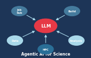
Designing multi-agent systems and LLM-driven workflows that autonomously plan, execute, and reason over scientific workloads at DOE leadership computing facilities.
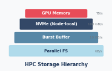
Advanced HDF5 features (Cache VOL, node-local storage, topology-aware collective I/O), storage benchmarking (MLPerf Storage, h5bench, DLIO), and exascale I/O optimization.
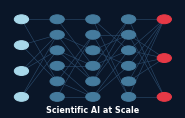
Large-scale distributed training (AuroraGPT), LLMs for science, AI-accelerated electron tomography, gravitational wave detection, and drug/materials discovery.
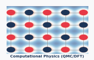
Quantum Monte Carlo, density functional theory, many-body perturbation theory, and dielectric-dependent hybrid functionals for heterogeneous materials.
Sorted by year (most recent first). For full list see Publications or Google Scholar.
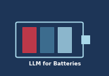
2025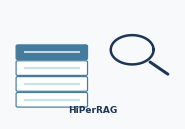
2025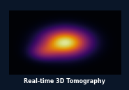
2022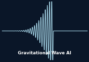
2022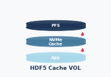
2022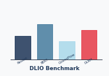
2021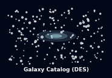
2019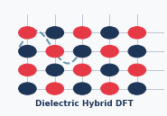
2019Multi-agent LLM framework for autonomous scientific workflows on DOE leadership computing facilities. Integrates ClearML, Globus, and facility APIs for end-to-end automation.
Deep Learning I/O benchmark for characterizing and optimizing storage performance for AI training workloads. Used in the MLPerf Storage benchmark suite.
Virtual Object Layer plugin for HDF5 enabling transparent caching on node-local NVMe storage, delivering up to 10× I/O acceleration for parallel scientific applications.
Unified benchmark suite for evaluating HDF5 I/O performance patterns on pre-exascale and exascale platforms. Covers diverse access patterns and VOL plugins.
Training large language models on the Aurora exascale supercomputer for science. Targeting domain-specific LLMs for materials, biology, climate, and energy research.
Co-leading the MLPerf Storage working group to develop community benchmarks for evaluating storage system performance under real AI training workloads.
Tomographic reconstruction algorithms with real-time 3D analysis during electron tomography experiments. Enables dynamic compressed sensing at atomic resolution.
LLM-powered chatbot for HPC user support at leadership computing facilities. Integrates facility documentation and knowledge bases via RAG. Published at SC’25.
Room 3117, Building 240
Argonne Leadership Computing Facility
Argonne National Laboratory
Lemont, IL 60439
Prospective collaborators & students: I am always interested in collaborations at the intersection of HPC, scientific AI, and autonomous workflows. Please send an email with a brief description of your interests and your CV. See the About page for more details.